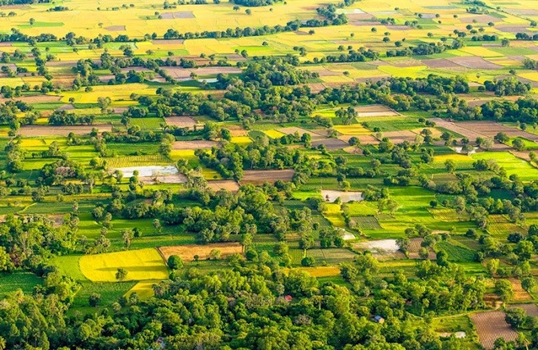

SƠ LƯỢC VIỆT NAM
Giới thiệu chung
Việt Nam có diện tích 331.690 km², nằm ở phía đông bán đảo Đông Dương, thuộc khu vực Đông Nam Á. Chung đường biên giới với ba quốc gia, phía bắc Việt Nam giáp Trung Quốc, phía tây giáp Lào và Campuchia, còn phía đông là biển Đông. Năm 2019, dân số Việt Nam khoảng hơn 95 triệu người, đứng thứ 13 thế giới. Hà Nội, thủ đô của Việt Nam là thành phố lớn thứ hai với 6,2 triệu dân, sau Thành phố Hồ Chí Minh, 6,4 triệu dân. Hiện nay Việt Nam là một quốc gia theo chế độ xã hội chủ nghĩa với đảng chính trị duy nhất là Đảng Cộng sản Việt Nam. Từ ngày 11 tháng 1 năm 2007, Việt Nam chính thức trở thành thành viên thứ 150 của Tổ chức Thương mại Thế giới. Ngày 16 tháng 10 năm 2007, tại cuộc bỏ phiếu diễn ra ở phiên họp Đại hội đồng Liên Hiệp Quốc ở New York, Việt Nam chính thức được bầu làm thành viên không thường trực Hội đồng Bảo an Liên Hiệp Quốc nhiệm kỳ 2008-2009. Với 54 dân tộc, Việt Nam là nước có nền văn hóa đa dạng. Tiếng Việt, ngôn ngữ chính thức của Việt Nam, là ngôn ngữ mẹ đẻ của trên 90 triệu người, cũng được các kiều dân sử dụng tại nhiều quốc gia khác như Hoa Kỳ, Pháp, Úc, Campuchia.
Địa lí
Việt Nam là một quốc gia nằm ở rìa phía đông bán đảo Đông Dương, nằm ở trung tâm khu vực Đông Nam Á. Diện tích Việt Nam là 331.212 km². Biên giới Việt Nam trên đất liền dài 4.639 km, giáp với vịnh Thái Lan ở phía tây nam, vịnh Bắc Bộ và biển Đông ở phía đông, Trung Quốc ở phía bắc, Lào và Campuchia phía tây. Hình thể nước Việt Nam có hình chữ S, khoảng cách từ bắc tới nam (theo đường chim bay) là 1.650 km và vị trí hẹp nhất theo chiều đông sang tây nằm ở Đồng Hới (Quảng Bình) với chưa đầy 50 km. Đường bờ biển dài 3.260 km không kể các đảo. Ngoài vùng nội thủy, Việt Nam tuyên bố 12 hải lý lãnh hải, thêm 12 hải lý vùng tiếp giáp lãnh hải, 200 hải lý vùng đặc quyền kinh tế và cuối cùng là thềm lục địa. Diện tích vùng biển thuộc chủ quyền, quyền chủ quyền và quyền tài phán của Việt Nam chiếm diện tích khoảng 1.000.000 km² biển Đông.
Lịch sử
Lịch sử Việt Nam nếu tính từ lúc có mặt con người sinh sống .Các nhà khảo cổ đã tìm thấy các di tích chứng minh loài người đã từng sống tại Việt Nam từ thời đại đồ đá cũ thuộc nền văn hóa Tràng An, Ngườm, Sơn Vi và Soi Nhụ. Vào thời kỳ đồ đá mới, nền văn hóa Hòa Bình – Bắc Sơn tại vùng này đã phát triển về chăn nuôi và nông nghiệp, đặc biệt là kỹ thuật trồng lúa nước. Những người Việt tiền sử trên vùng châu thổ sông Hồng – Văn minh sông Hồng và sông Mã này đã khai hóa đất để trồng trọt, tạo ra một hệ thống đê điều để chế ngự nước lụt của các sông, đào kênh để phục vụ cho việc trồng lúa và đã tạo nên nền văn minh lúa nước và văn hóa làng xã.Đến thời kỳ đồ sắt, vào khoảng thế kỷ 7 TCN đã xuất hiện nhà nước đầu tiên của người Việt trên miền Bắc Việt Nam ngày nay; theo sử sách, đó là Nhà nước Văn Lang của các vua Hùng. Thời kỳ Vua Hùng được nhiều người ghi nhận là quốc gia có tổ chức đầu tiên của người Việt Nam, bắt đầu với truyền thuyết Con Rồng cháu Tiên mà người Việt Nam tự hào truyền miệng từ đời này qua đời khác.
Chính trị
Việt Nam hiện là một nước theo chế độ xã hội chủ nghĩa. Hệ thống chính trị đã thực hiện theo cơ chế chỉ có duy nhất một đảng chính trị (là Đảng Cộng sản Việt Nam) lãnh đạo, với tôn chỉ là: Đảng lãnh đạo, Nhà nước quản lý và nhân dân làm chủ thông qua cơ quan quyền lực là Quốc hội Việt Nam. Người đứng đầu Đảng Cộng sản Việt Nam là một Tổng bí thư. Tổng bí thư hiện nay là ông Nguyễn Phú Trọng. Quốc hội là cơ quan đại biểu cao nhất của nhân dân, cơ quan quyền lực Nhà nước cao nhất của nước Cộng hoà Xã hội Chủ nghĩa Việt Nam. Quốc hội là cơ quan duy nhất có quyền lập hiến và lập pháp. Đứng đầu Quốc hội là Chủ tịch Quốc hội. Chủ tịch Quốc hội hiện nay là bà Nguyễn Thị Kim Ngân. Chủ tịch nước là người đứng đầu Nhà nước được Quốc hội bầu. Chủ tịch nước hiện nay là ông Nguyễn Phú Trọng.
Các dân tộc
Theo số liệu tổng điều tra dân số, tổng số dân của Việt Nam vào thời điểm 0h ngày 01/4/2019 là 96.208.984 người, trong đó dân số nam là 47.881.061 người (chiếm 49,8%) và dân số nữ là 48.327.923 người (chiếm 50,2%). Với kết quả này, Việt Nam là quốc gia đông dân thứ 15 trên thế giới. 54 dân tộc sống trên đất Việt Nam chia theo ngôn ngữ thì có 8 nhóm [note 1]. Dân tộc đông nhất là dân tộc Kinh, chiếm 86,2% dân số. Các dân tộc thiểu số đông dân nhất: Tày, Thái (Chữ Thái Đen: ꪼꪕ), Mường, Khmer, Hoa, Nùng, H'Mông, Dao, Gia Rai, Ê Đê, Ba Na, Chăm, Sán Dìu, Ra Glai... Đa số các dân tộc này sống ở miền núi và vùng sâu vùng xa ở miền Bắc, Tây Nguyên, miền trung và đồng bằng sông Cửu Long. Cuối cùng là các dân tộc Brâu, Ơ đu và Rơ Măm chỉ có trên 300 người. Các dân tộc chưa được xác định rõ Đây là những dân tộc được nhắc đến trong hoạt động xã hội, nhưng lại không được nêu trong danh sách 54 dân tộc tại Việt Nam.
Ngôn ngữ
Tiếng Việt (chữ Nôm: 㗂tiếng越Việt), còn gọi tiếng Việt Nam[5], tiếng Kinh hay Việt ngữ, là ngôn ngữ của người Việt và là ngôn ngữ chính thức tại Việt Nam. Đây là tiếng mẹ đẻ của khoảng 85% dân cư Việt Nam, cùng với hơn 4 triệu Việt kiều. Tiếng Việt còn là ngôn ngữ thứ hai của các dân tộc thiểu số tại Việt Nam. Mặc dù tiếng Việt có rất nhiều từ vựng vay mượn từ tiếng Hán và trước đây dùng chữ Hán và chữ Nôm để viết, ngôn ngữ này được coi là một trong số các ngôn ngữ thuộc ngữ hệ Nam Á và có số người nói nhiều nhất (nhiều hơn một số lần so với các ngôn ngữ khác cùng hệ cộng lại). Hiện tại tiếng Việt chủ yếu sử dụng chữ Quốc ngữ (chữ Latinh) cùng các dấu thanh để viết, còn chữ Hán và chữ Nôm rất hiếm khi được sử dụng (ngoại trừ người Kinh ở Trung Quốc). Tiếng Việt cũng đã được công nhận là một ngôn ngữ dân tộc thiểu số tại Cộng hòa Séc.
Tôn giáo
Tôn giáo tại Việt Nam khá đa dạng, gồm có Phật giáo (cả Đại thừa lẫn Tiểu thừa và một số nhóm lấy nền tảng là triết lý Phật giáo nhưng được cải biên để thích ứng với văn hóa như Hòa Hảo, Tịnh độ cư sĩ Phật hội, Tứ Ân Hiếu Nghĩa, Bửu Sơn Kỳ Hương); Kitô giáo (gồm nhánh Công giáo Rôma và nhánh Tin Lành); tôn giáo nội sinh như đạo Cao Đài; và một số tôn giáo khác (Hồi giáo và Ấn Độ giáo). Nền tín ngưỡng dân gian bản địa cho tới nay vẫn có ảnh hưởng nhất định tại Việt Nam. Một lượng đáng kể người dân tự xem mình là người không tôn giáo, hoặc ít ra là trên giấy tờ thể hiện như vậy, mặc dù họ có đi đến các địa điểm tôn giáo vào một vài dịp trong năm. Tín ngưỡng thờ cúng tổ tiên (còn gọi là "Đạo Ông Bà" hoặc "Đạo Hiếu") cũng có chỗ đứng rất quan trọng trong tâm tưởng của đa phần người dân Việt Nam, dù họ có theo tôn giáo nào hay không
Kinh tế

Kinh tế Việt Nam là một nền kinh tế thị trường định hướng xã hội chủ nghĩa đang phát triển, phụ thuộc lớn vào nông nghiệp, xuất khẩu thô và đầu tư trực tiếp nước ngoài[9]. Đây là nền kinh tế lớn thứ 6/11 ở khu vực Đông Nam Á; lớn thứ 44 trên thế giới xét theo quy mô GDP danh nghĩa hoặc lớn thứ 35 nếu xét GDP theo sức mua tương đương (theo các số liệu thống kê của năm 2019), đứng thứ 130 xét theo thu nhập bình quân đầu người[10] hoặc đứng thứ 122 nếu tính GDP bình quân đầu người theo sức mua tương đương. Tổng sản phẩm nội địa GDP năm 2019 đạt 261,6 tỷ USD theo danh nghĩa[11] hoặc 647,3 tỷ USD tính theo sức mua tương đương[12]. Thu nhập bình quân đầu người đạt mức 2,740 USD/người (ước tính 2019). Đảng Cộng sản Việt Nam chủ trương xây dựng ở Việt Nam một hệ thống kinh tế thị trường theo định hướng xã hội chủ nghĩa.
Địa hình
Việt Nam là một quốc gia nhiệt đới với phần lớn diện tích là địa hình đồi núi (chiếm 3/4 diện tích lãnh thổ), phần lớn diện tích chủ yếu là đồi núi thấp, đồng bằng chỉ chiếm 1/4 diện tích. Tính trên phạm vi cả nước, địa hình đồng bằng và đồi núi thấp (dưới 1000m) chiếm tới 85% diện tích. Địa hình núi cao (trên 2000m) chỉ chiếm 1% diện tích cả nước. Cấu trúc địa hình khá đa dạng nhờ vận động Tân kiến tạo làm trẻ lại, tạo nên sự phân bậc rõ rệt theo độ cao, thấp dần từ tây bắc xuống đông nam. Đất đai có thể dùng cho nông nghiệp chiếm chưa tới 20%. Đất nước bị chia thành miền núi, vùng đồng bằng sông Hồng ở phía bắc;dãy Trường Sơn, Tây Nguyên, đồng bằng duyên hải miền trung, và đồng bằng sông Cửu Long ở phía nam.
Đồng bằng ven biển
Những vùng đồng bằng thấp và phẳng ven biển trải dài từ phía nam đồng bằng sông Hồng tới châu thổ sông Cửu Long. Ở phía đất liền, dãy Trường Sơn mọc dựng đứng trên bờ biển, các mũi của nó ở nhiều chỗ chạy xiên ra biển. Nói chung mảnh đất ven biển khá màu mỡ và được canh tác dày đặc. Biển Đông là một vùng biển lớn, tương đối kín, thể hiện rõ tính chất nhiệt đới gió mùa Đông Nam Á. Biển Đông rộng gấp nhiều lần phần đất liền và có giá trị to lớn về nhiều mặt. Cần phải có kế hoạch khai thác và bảo vệ biển tốt hơn để góp phần vào sự nghiệp công nghiệp hóa, hiện đại hóa đất nước.
Đồng bằng sông Cửu Long
Vùng đồng bằng sông Cửu Long là vùng cực nam của Việt Nam, còn được gọi là Vùng đồng bằng sông Mê Kông, Vùng đồng bằng Nam Bộ, Vùng Tây Nam Bộ, Cửu Long hoặc theo cách gọi của người dân Việt Nam ngắn gọn là Miền Tây, có 1 thành phố trực thuộc trung ương là thành phố Cần Thơ và 12 tỉnh: Long An, Tiền Giang, Bến Tre, Vĩnh Long, Trà Vinh, Hậu Giang, Sóc Trăng, Đồng Tháp, An Giang, Kiên Giang, Bạc Liêu và Cà Mau. Theo số liệu của Tổng cục Thống kê Việt Nam năm 2019, Đồng bằng sông Cửu Long là đồng bằng có tổng diện tích các tỉnh, thành phố trực thuộc Trung ương lớn nhất Việt Nam (40.547,2 km²) và có tổng dân số toàn vùng là 17.273.630 người.
Đồng bằng sông Hồng
Đồng bằng sông Hồng là một vùng hình tam giác, diện tích 15.000 km vuông, hơi nhỏ hơn nhưng lại đông dân hơn đồng bằng sông Cửu Long.Qua nhiều thế kỷ, việc phòng lụt đã trở thành một công việc gắn liền với văn hoá và kinh tế của vùng. Hệ thống đê điều và kênh mương rộng lớn đã được xây dựng để chứa nước sông Hồng và để tưới tiêu cho vùng châu thổ giàu lúa gạo này cùng để tháo nước. Thời trước nó là một vịnh nhỏ của vịnh Bắc Bộ, dần dần nó được bồi đắp nhờ khối lượng phù sa lắng đọng khổng lồ của các con sông, thuộc hệ thống sông Hồng và hệ thống sông Thái Bình, qua hàng nghìn năm khiến mỗi năm lấn thêm ra biển khoảng một trăm mét.
Trung du miền núi
Vùng trung du miền núi phía bắc, trước năm 1954 còn gọi là Trung du và thượng du là khu vực sơn địa và bán sơn địa ở miền Bắc Việt Nam.Đây là nơi sinh sống của tổ tiên người Việt. Trước năm 1975, đồng bằng sông Hồng chiếm 70% sản lượng nông nghiệp và 80% sản lượng công nghiệp miền bắc Việt Nam.. Phía Đông Bắc, Tây Bắc và Tây Việt Nam là vùng miền núi và trung du bao gồm nhiều dãy núi, khối núi, cao nguyên và các đồi. Đây là nơi sinh sống của nhiều nhóm dân tộc thiểu số. Dãy núi lớn ở đây là Hoàng Liên Sơn ở miền Bắc và Trường Sơn ở miền Trung. Nhiều ngọn núi có độ cao trên 2.000 mét, trong đó Phan Xi Păng là ngọn cao nhất, lên tới 3.143 mét. Ở vùng Đông Bắc và miền Trung, nhiều dãy núi chạy ra biển, tạo thành những cảnh quan tự nhiên tráng lệ, hùng vĩ.
VĂN HÓA ẨM THỰC
Lời mở đầu
Văn hóa ẩm thực là nét văn hóa tự nhiên hình thành trong cuộc sống. Đối với nhiều dân tộc, quốc gia, ẩm thực không chỉ là nét văn hóa về vật chất mà còn là văn hóa về tinh thần. Qua ẩm thực người ta có thể hiểu được nét văn hóa thể hiện phẩm giá con người, trình độ văn hóa của dân tộc với những đạo lý, phép tắc, phong tục trong cách ăn uống…Và mỗi khi nhắc đến đất nước Việt Nam xinh đẹp thì ẩm thực luôn là một đề tài thú vị. Ẩm thực của người Việt không chỉ là những món ăn, công thức chế biến mà đây là một nét văn hóa tự nhiên hình thành trong cuộc sống. Chúng được biết đến với những nét đặc trưng như: tính hòa đồng, đa dạng, ít mỡ; đậm đà hương vị với sự kết hợp nhuần nhuyễn nhiều loại nguyên liệu và gia vị khác nhau nhằm giúp tăng mùi vị, sức hấp dẫn trong từng món ăn. Với một đất nước có chiều dài lịch sử lâu đời và vị trí địa lý khác biệt, thì mỗi một vùng miền trên dải đất hình chữ S này lại có những món ăn đặc trưng, những món đặc sản riêng biệt không thể hòa lẫn. Và trong số đầu tiên của Khám phá ẩm thực, chúng ta sẽ cùng nhau tìm hiểu ẩm thực Việt Nam là gì? Và những nét đặc trưng trong văn hóa ẩm thực Việt Nam.
Ẩm thực Việt Nam là gì ?
Ẩm thực Việt Nam là cách gọi của phương thức chế biến món ăn, nguyên lý pha trộn gia vị và những thói quen ăn uống nói chung của mọi người Việt trên đất nước Việt Nam. Tuy có ít nhiều có sự khác biệt giữa các vùng miền, dân tộc thì ẩm thực Việt Nam vẫn bao hàm ý nghĩa khái quát nhất để chỉ tất cả những món ăn phổ biến trong cộng đồng người Việt.
Đặc trưng của ẩm thực Việt
-
Việt Nam là một nước nông nghiệp thuộc về xứ nóng, vùng nhiệt đới gió mùa. Ngoài ra, lãnh thổ Việt Nam được chia ra ba miền rõ rệt là Bắc, Trung, Nam, cùng với đó là 54 dân tộc anh em. Chính các đặc điểm về địa lý, văn hóa, dân tộc, khí hậu đã quy định những đặc điểm riêng của ẩm thực từng vùng – miền. Mỗi miền có một nét, khẩu vị đặc trưng. Điều đó góp phần làm ẩm thực Việt Nam phong phú, đa dạng. Đây là một văn hóa ăn uống sử dụng rất nhiều loại rau (luộc, xào, làm dưa, ăn sống); nhiều loại nước canh đặc biệt là canh chua, trong khi đó số lượng các món ăn có dinh dưỡng từ động vật thường ít hơn. Những loại thịt được dùng phổ biến nhất là thịt lợn, bò, gà, ngan, vịt, các loại tôm, cá, cua, ốc, hến, trai, sò,... Những món ăn chế biến từ những loại thịt ít thông dụng hơn như thịt chó, thịt dê, thịt rùa, thịt rắn, thịt ba ba,... thường không phải là nguồn thịt chính, nhiều khi được coi là đặc sản và chỉ được sử dụng trong một dịp liên hoan, tiệc nào đó với rượu uống kèm. Người Việt cũng có một số món ăn chay theo đạo Phật được chế biến từ các loại thực vật, không có nguồn thực phẩm từ động vật. Tuy nhiên, trong cộng đồng thì lại có rất ít người ăn chay trường, chỉ có các sư thầy trong các chùa hoặc người bị bệnh nặng buộc phải ăn kiêng.
Ẩm thực Việt Nam chú trọng ăn ngon tuy đôi khi không đặt mục tiêu hàng đầu là ăn bổ. Bởi vậy trong hệ thống ẩm thực người Việt ít có những món hết sức cầu kỳ, hầm nhừ ninh kỹ như ẩm thực Trung Hoa, cũng không thiên về bày biện có tính thẩm mỹ cao độ như ẩm thực Nhật Bản, mà thiên về phối trộn gia vị một cách tinh tế để món ăn được ngon, hoặc sử dụng những nguyên liệu dai, giòn thưởng thức rất thú vị dù không thực sự bổ béo (ví dụ như các món măng, chân cánh gà, phủ tạng động vật...).
Trong thực tế, nhiều người nhận thấy, một cách cảm tính, đặc trưng ẩm thực Việt Nam có sự khác biệt với các nền văn hóa ẩm thực khác trên thế giới: món ăn Trung Hoa ăn bổ dưỡng, món ăn Việt ăn ngon miệng, món ăn Nhật nhìn thích mắt. Tuy nhiên, đặc điểm này ngày càng phai nhòa trong thời hội nhập.
Theo ý kiến của Tiến sĩ sử học Hãn Nguyên Nguyễn Nhã, ẩm thực Việt Nam có 9 đặc trưng:
- Tính hoà đồng hay đa dạng: Bắt đầu từ tính cách dễ dàng tiếp thu văn hóa, đặc biệt là văn hóa ẩm thực từ các dân tộc khác của người Việt, để từ đó chế biến thành của mình. Đây cũng là điểm nổi bật của ẩm thực của nước ta từ Bắc chí Nam.
- Tính ít mỡ: Các món ăn Việt Nam chủ yếu làm từ rau, quả, củ nên ít mỡ (khá ít món ăn nấu ngập dầu), không dùng nhiều thịt như các nước phương Tây, cũng không dùng nhiều dầu mỡ như món của người Hoa.
- Tính đậm đà hương vị: Khi chế biến thức ăn người Việt Nam thường dùng nước mắm để nêm, lại kết hợp với rất nhiều gia vị khác,… nên món ăn rất đậm đà. Mỗi món khác nhau đều có nước chấm tương ứng phù hợp với hương vị.
- Tính tổng hoà nhiều chất, nhiều vị: Các món ăn Việt Nam thường bao gồm nhiều lọai thực phẩm như thịt, tôm, cua cùng với các loại rau, đậu, gạo. Ngoài ra còn có sự tổng hợp của nhiều vị như chua, cay, mặn, ngọt, bùi béo…
- Tính ngon và lành: Ẩm thực Việt Nam là sự kết hợp giữa các món, các vị lại để tạo nên nét đặc trưng riêng. Những thực phẩm mát như thịt vịt, ốc thường được chế biến kèm với các gia vị ấm nóng như gừng, rau răm… Đó là cách cân bằng âm dương rất thú vị, chỉ có người Việt Nam mới có…
- Dùng đũa: Giống một vài nước châu Á khác thì việc sử dụng đũa là một nét đặc trưng rất thú vị của ẩm thực Việt, bạn có thể sử dụng đũa trong hầu hết các món ăn, từ kho, xào, chiên, hay thậm chí là cả canh. Đôi đũa Việt có mặt trong mọi bữa cơm gia đình, ngay cả khi quay nướng, người Việt cũng ít dùng nĩa để xiên thức ăn như người phương Tây. Kèm với đó thì gắp là một nghệ thuật, gắp sao cho khéo, cho chặt đừng để rơi thức ăn…
- Tính cộng đồng hay tính tập thể: Tính cộng đồng thể hiện rất rõ trong ẩm thực Việt Nam, bao giờ trong bữa cơm cũng có bát nước mắm chấm chung, hoặc múc riêng ra từng bát nhỏ từ bát chung ấy.
- Tính hiếu khách: Trước mỗi bữa ăn người Việt thường có thói quen mời. Lời mời thể hiện sự giao thiệp, tình cảm, hiếu khách, mối quan tâm trân trọng người khác…
- Tính dọn thành mâm: Người Việt có thói quen dọn sẵn thành mâm, dọn nhiều món ăn trong một bữa lên cùng một lúc chứ không như phương Tây ăn món nào mới mang món đó ra.
Đặc điểm ẩm thực Việt theo từng miền
Ẩm thực miền Bắc đặc trưng với khẩu vị mặn mà, đậm đà, thường không đậm các vị cay, béo, ngọt bằng các vùng khác, chủ yếu sử dụng nước mắm loãng, mắm tôm. Sử dụng nhiều món rau và các loại thủy sản nước ngọt dễ kiếm như tôm, cua, cá, trai, hến... và nhìn chung, do truyền thống xa xưa có nền nông nghiệp nghèo nàn, ẩm thực miền Bắc trước kia ít thịnh hành các món ăn với nguyên liệu chính là thịt, cá. Nhiều người đánh giá cao ẩm thực Hà Nội một thời, cho rằng nó đại diện tiêu biểu nhất của tinh hoa ẩm thực miền Bắc Việt Nam với những món phở, bún thang, bún chả, các món quà như cốm Vòng, bánh cuốn Thanh Trì... và gia vị đặc sắc như tinh dầu cà cuống, rau húng Láng.
Ẩm thực miền Trung được biết đến với vị cay nồng, với tất cả tính chất đặc sắc của nó thể hiện qua hương vị riêng biệt, nhiều món ăn cay và mặn hơn đồ ăn miền Bắc và miền Nam, màu sắc được phối trộn phong phú, rực rỡ, thiên về màu đỏ và nâu sậm. Các tỉnh thành miền Trung như Huế, Đà Nẵng, Bình Định rất nổi tiếng với mắm tôm chua, các loại mắm ruốc hay các loại đặc sản bánh kẹo Đà Nẵng, Huế. Đặc biệt, ẩm thực Huế do ảnh hưởng từ phong cách ẩm thực hoàng gia, cho nên rất cầu kỳ trong chế biến và trình bày. Một mặt khác, do địa phương không có nhiều sản vật mà ẩm thực hoàng gia lại đòi hỏi số lượng lớn món, nên mỗi loại nguyên liệu đều được chế biến rất đa dạng với trong nhiều món khác nhau.
Ẩm thực miền Nam có thiên hướng hảo vị chua ngọt, đây là nơi chịu ảnh hưởng nhiều của ẩm thực Trung Quốc, Campuchia, Thái Lan, có đặc điểm là thường cho thêm đường và hay sử dụng sữa dừa (nước cốt và nước dão của dừa). Nền ẩm thực này cũng sản sinh ra vô số loại mắm khô (như mắm cá sặc, mắm bò hóc, mắm ba khía...). Ẩm thực miền Nam cũng dùng nhiều đồ hải sản nước mặn và nước lợ hơn miền Bắc (các loại cá, tôm, cua, ốc biển), và rất đặc biệt với những món ăn dân dã, đặc thù của một thời đi mở cõi, hiện nay nhiều khi đã trở thành đặc sản: chuột đồng khìa nước dừa, dơi quạ hấp chao, rắn hổ đất nấu cháo đậu xanh, đuông dừa, đuông đất hoặc đuông chà là, vọp chong, cá lóc nướng trui...
Ẩm thực thể hiện văn hóa tinh thần người Việt

Văn hóa tinh thần của người Việt trong ẩm thực chính là sự thể hiện nét đẹp trong văn hóa giao tiếp, là sự cư xử giữa người với người trong bữa ăn, làm vui lòng nhau qua thái độ ứng xử lịch lãm, có giáo dục. Việc ăn uống đều có những phép tắc, lề lối riêng, từ bản thân, đến trong gia đình, rồi các mối quan hệ ngoài xã hội. Bản thân mỗi người phải biết giữ gìn, thận trọng trong khi ăn, cũng như đề cao danh dự của mình: “ăn trông nồi, ngồi trông hướng”, hay “ăn phải nhai, nói phải nghĩ. Trong gia đình: ăn chung mâm, ưu tiên thức ăn ngon cho người lớn tuổi, trẻ nhỏ”kính trên nhường dưới”, thể hiện sự kính trọng, tình cảm yêu thương. Bữa cơm hàng ngày được xem là bữa cơm xum họp gia đình, mọi người quây quần bên nhau, cùng nhau vui vầy sau một ngày làm việc mệt nhọc.
LỄ HỘI TRUYỀN THỐNG
Giới thiệu chung
Văn hóa Việt Nam là một trong những nền văn hóa lâu đời nhất trong khu vực Thái Bình Dương. Tuy nằm cạnh hai nền văn hóa lớn là văn hóa Trung Hoa và Ấn Độ, Việt Nam vẫn giữ gìn được rất nhiều nét văn hóa riêng của mình, thể hiện qua nhiều mặt như các các phong tục truyền thống vẫn còn tồn tại đến ngày nay đời sống của người Việt hay nền văn học dân gian phong phú độc đáo. Có thể nói văn hóa của Việt Nam là sự pha trộn đặc biệt giữa nhiều nền văn hóa cổ xưa cùng với văn hóa bản xứ của người Việt, ngoài ảnh hưởng lớn nhất của Trung Hoa cũng có ảnh hưởng của văn hóa Ấn Độ, Chàm, và sau này ảnh hưởng lớn của văn hóa phương Tây (Pháp, Nga, Mỹ).
Tổng quan
Việt Nam là một quốc gia đã có hàng nghìn năm lịch sử. Cũng như nhiều quốc gia khác trên thế giới, Việt Nam có một nền văn hóa mang bản sắc riêng. Chính những nét đó làm nên cốt cách, hình hài và bản sắc của dân tộc Việt Nam.Trong kho tàng văn hóa của dân tộc Việt Nam, sinh hoạt lễ hội là vùng văn hóa rất đặc trưng. Lễ hội là sinh hoạt văn hóa dân gian hầu như có mặt ở khắp mọi miền đất nước. Nhiều lễ hội ra đời cách đây hàng nghìn năm đến nay vẫn được duy trì. Lễ hội ở Việt Nam bao giờ cũng hướng tới một đối tượng thiêng liêng cần suy tôn là nhân thần hay nhiên thần. Đó chính là hình ảnh hội tụ những phẩm chất cao đẹp nhất của con người. Giúp con người nhớ về nguồn cội, hướng thiện và nhằm tạo dựng một cuộc sống tốt lành, yên vui.

Phân cấp
Khác với các di tích Việt Nam đã được kiểm kê và phân cấp theo quy định, các lễ hội ở Việt Nam chưa được quy định phân cấp bài bản. Có những lễ hội bị biến tướng, trần tục hoá, mở hội tràn lan... nhiều ý kiến đề xuất việc kiểm kê các lễ hội trên toàn quốc để tiến tới phân cấp lễ hội theo các cấp: lễ hội cấp quốc gia, lễ hội cấp tỉnh, lễ hội cấp huyện và lễ hội cấp làng. Theo bà Lê Thị Minh Lý - Phó Cục trưởng Cục Di sản Văn hoá, điểm yếu trong việc quản lý lễ hội hiện nay đó là chưa có cơ sở dữ liệu khoa học và quan điểm tiếp cận đúng. Không nên đánh đồng giữa lễ hội và festival.Tùy vào từng thời điểm, vào chủ thể mà lễ hội hiện nay được tổ chức ở nhiều cấp khác nhau. Ví dụ như lễ hội đền Hùng được tổ chức ở quy mô quốc gia 5 năm/ lần. Những năm số lẻ thì lại được tổ chức ở quy mô cấp tỉnh. Các lễ hội thường được tổ chức ở quy mô cấp tỉnh như hội Lim, lễ hội Lam Kinh (Thanh Hóa), lễ hội đền Trần (Nam Định)...